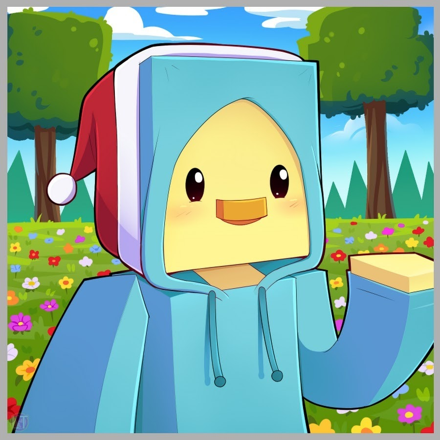

Exhibit One - YouTube Channel
Over four years and hundreds of hours, I've created dozens of YouTube videos exploring Minecraft programming. These projects have developed my video editing, communication, and storytelling skills in ways that the former me could only dream of.
Poetry Writing
I was a Menlo Park Youth Poetry Contest winner in 2024. Here's the poem I wrote:
Driving up the overpass
My face is pressed up on the glass
My breath comes soft, in calming waves
And I'm content in my own brain
Your gentle laugh floats through the air
It fills my cup to know you care
The cars are sparse, the road is wide
My thoughts so tranquil as you drive
I'll stop a sec to take it in
And save this memory with a pin
The air today is oh-so clear
A thousand miles I could peer
And see the sky with textured clouds
And pink and golden highlight shrouds
They wrap around the stratosphere
And save their tears for future years
It frankly takes my breath away
And makes me wonder as I sway
When did I make this mental switch?
To think of clouds and think of this
Is my mind becoming clear?
Or is the sky just good this year?
The mental shutter closes leaf
A moment saved and on repeat
And now my mind drifts back to here
To your voice wafting warm sweet smears
I peel my face bones off the glass
You drive us down the overpass